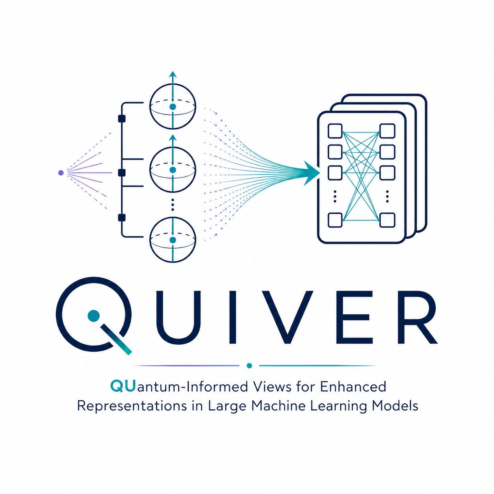
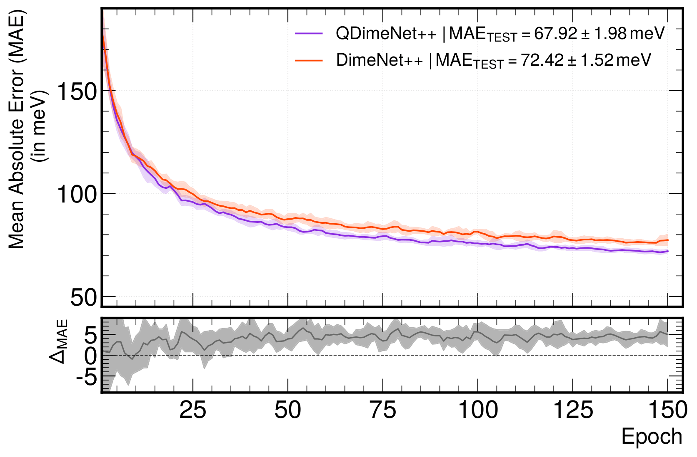

Quiver: QUantum-Informed Views for Enhanced Representations in Large Machine Learning Models
3Blackett Laboratory, Imperial College of Science and Technology, London, UK 4Institute for Quantum Materials and Technologies, KIT, Karlsruhe, DE
ICML 2026 AI4Physics Workshop · Seoul, Korea · Correspondence: aritra.bal@kit.edu
Abstract
Large machine learning models benefit substantially from multimodal inputs that provide a complementary view of the same example. We introduce Quiver (QUantum-Informed Views for Enhanced Representations), a paradigm that enriches classical data-driven features with a quantum Fisher view: a geometrically motivated, basis-independent summary of higher-order correlations captured by a variational quantum circuit (VQC) trained to perform the same task. Unlike classical feature augmentation, the quantum Fisher information matrix (QFIM) encodes the intrinsic geometry of the learned quantum state manifold. While this feature map is ordinarily non-trivial to model classically, it surfaces statistical structure that additional classical data or model capacity finds difficult to learn, making the quantum Fisher view a genuinely complementary modality rather than a redundant one.
We demonstrate that Quiver improves standard performance metrics on two benchmark datasets from very different fields: QM9 for predicting molecular properties, and JetClass for predicting jet flavor at the Large Hadron Collider (LHC). The QFIM-augmented Particle Transformer improves both AUC and QCD background rejection across all training sizes and feature sets with only a \(\sim\!7\%\) parameter overhead. On the QM9 HOMO–LUMO gap regression task, QDimeNet++ reduces the mean absolute error from \(72.42 \pm 1.52\,\text{meV}\) to \(67.92 \pm 1.98\,\text{meV}\), a \(6.21\%\) relative improvement at a \(0.27\%\) parameter overhead. The core contribution is domain-agnostic: the quantum Fisher view can be fused into a broad class of model architectures via targeted modifications, well before the advent of fault-tolerant quantum hardware.
The Quiver Paradigm
Quantum Fisher Information Matrix
A variational quantum circuit (VQC) prepares a parameterized pure state
where the angles \(\boldsymbol{\Theta} = \boldsymbol{\Theta}(x)\) are functions of the input \(x\) (a jet or a molecule). Because this map is smooth, the image of the input manifold forms a submanifold of pure quantum states whose canonical Riemannian metric is the Fubini–Study metric. On pure states this coincides, up to a factor of four, with the QFIM:
Because the input \(x\) enters through the data-dependent state preparation that precedes the trainable rotations, \(F_{ij}(\boldsymbol{\theta}_0; x)\) is an input-conditioned object: evaluated at a fixed reference \(\boldsymbol{\theta}_0\), it characterizes how the encoded state of \(x\) shapes the local geometry of the trainable-parameter manifold. Diagonal entries \(F_{ii}\) record per-feature dynamic importance scores; off-diagonal entries \(F_{ij}\) couple distinct parameters coherently across overlapping qubit subsystems, flagging collective behavior of the corresponding input elements. This makes the QFIM a compact relational tensor whose entries are directly consumable by attention layers or message-passing networks.
The 2A2Q Molecular Embedding
For the QM9 molecular dataset, Quiver uses a novel two-atom–two-qubit (2A2Q) embedding. Each molecule is represented as a 10-qubit system with one qubit assigned to each heavy atom (unused slots are filled with randomly sampled hydrogen atoms). The objective is to regress \(\Delta\epsilon = \epsilon_\text{HOMO} - \epsilon_\text{LUMO}\), the HOMO–LUMO gap.
Starting from \(|0\rangle^{\otimes N}\), a per-atom initialization applies \(R_Y(w^j_\text{atom})|0\rangle\) to each qubit \(j\), where \(w^j_\text{atom}\) is a trainable parameter encoding the atomic species. For bonded atom pairs \((i,j)\) satisfying \(d_{ij} < d_\text{CUTOFF} = 1.7\,\mathring{\text{A}}\), a pairwise entanglement block is applied. The encoding angles are:
where \(e_{d_1}, e_{d_2}\) are learnable distance scaling parameters, \(e_\text{bond}^{(ij)}\) is a learnable bond-type entanglement parameter, \(d_{ij}\) is the translation-invariant pairwise distance, and \(\theta_{ij}, \phi_{ij}\) are azimuthal and zenith angles. The two-qubit entanglement unitary applied to the pair is:
where \(I_{XX}, I_{YY}, I_{ZZ}\) are Ising-type two-qubit interactions. The circuit stacks \(N=2\) such layers. The HOMO–LUMO gap is predicted from the observable
where \(\{c_i\}\) are trainable coefficients. Circuit parameters are optimized with the Huber loss, which interpolates between \(\ell_2\) behavior for small residuals and \(\ell_1\) for large ones.
The resulting QFIM is a \(10 \times 10\) grid of \(6 \times 6\) sub-blocks (a \(60\times 60\) real symmetric matrix), stored as 90 channels over 10 atom slots. The off-diagonal sub-block \(Q_{ij}\) captures the coupling between atoms \(i\) and \(j\) through the intrinsic geometry of the quantum state manifold, providing a physically motivated relational prior that modulates edge-state vectors in the downstream graph neural network.
Injecting the QFIM into Classical Models
Quiver is architecture-agnostic. For transformer backbones (jet classification via the Particle Transformer), the QFIM channels are embedded by a Particle-Transformer-style MLP and the resulting tokens are appended to the classical particle sequence, enabling implicit cross-attention between quantum and classical modalities:
where \(k_i = \mathrm{MLP}_\text{tok}(x_i) \in \mathbb{R}^{128}\) are classical particle tokens and \(q_i = \mathrm{MLP}_\text{QFIM}(\mathbf{Q}[:,i]) \in \mathbb{R}^{128}\) are the embedded QFIM tokens.
For GNN backbones (molecular regression via DimeNet++), the QFIM modulates the learned graph edge states via a residual multiplicative gate:
where \(\alpha\) is a global learnable scalar initialized to zero (ensuring the networks are identical at initialization) and \(\Theta(Q_{ij})\) is a per-edge bounded scalar learned by a CNN applied to the \(6\times 6\) QFIM sub-block, followed by a scaling MLP with a final \(\tanh\) activation. This constrains the gate to \([-1, 1]\) and ensures the QFIM acts as genuine geometric prior rather than generic parameter capacity.
Results
Jet Flavor Classification (JetClass)
We evaluate Quiver on the binary top-quark vs. QCD-background classification task in the JetClass dataset, using the Particle Transformer (ParT, 2.14M parameters) as the classical baseline. The Quiver-augmented variant (2.29M parameters, a \(7\%\) increase) incorporates the QFIM via sequence concatenation. Results below are mean \(\pm\) std over five independent seed initializations. \(1/\epsilon_B\) is the QCD background rejection evaluated at signal efficiency \(\epsilon_S = 0.5\).
| Features | Method | N | AUC | \(1/\epsilon_B\) |
|---|---|---|---|---|
| Kinematics | ParT | \(0.1\,\text{M}\) | \(0.97140 \pm 0.00038\) | \(107 \pm 2\) |
| \(0.5\,\text{M}\) | \(0.97629 \pm 0.00015\) | \(146 \pm 3\) | ||
| \(5\,\text{M}\) | \(0.97832 \pm 0.00004\) | \(176 \pm 1\) | ||
| Quiver | \(0.1\,\text{M}\) | \(0.97368 \pm 0.00013\) | \(130 \pm 1\) | |
| \(0.5\,\text{M}\) | \(0.97848 \pm 0.00045\) | \(191 \pm 9\) | ||
| \(5\,\text{M}\) | \(0.98070 \pm 0.00003\) | \(240 \pm 1\) | ||
| Full | ParT | \(0.1\,\text{M}\) | \(0.98875 \pm 0.00008\) | \(570 \pm 13\) |
| \(0.5\,\text{M}\) | \(0.99080 \pm 0.00017\) | \(921 \pm 13\) | ||
| \(5\,\text{M}\) | \(0.99235 \pm 0.00003\) | \(1306 \pm 8\) | ||
| Quiver | \(0.1\,\text{M}\) | \(0.98893 \pm 0.00005\) | \(590 \pm 7\) | |
| \(0.5\,\text{M}\) | \(0.99095 \pm 0.00003\) | \(951 \pm 17\) | ||
| \(5\,\text{M}\) | \(0.99244 \pm 0.00003\) | \(1362 \pm 28\) |
Table 1: Comparison of ParT and Quiver on the top-quark tagging task. Kinematics: kinematic features only (\(\log p_{T,\text{rel}}, \Delta\eta, \Delta\phi\) plus four-vectors). Full: kinematics plus calorimeter deposits, particle-ID flags, and impact-parameter features. Quiver rows are shaded.
Molecular Property Regression (QM9)
QDimeNet++ reduces the test MAE on the HOMO–LUMO gap task from \(72.42 \pm 1.52\,\text{meV}\) (DimeNet++ baseline) to \(67.92 \pm 1.98\,\text{meV}\), a 6.21% relative improvement at a 0.27% parameter overhead. A paired \(t\)-test across ten seeds yields \(t_9 = 5.78\) (\(p < 10^{-3}\)), confirming the improvement is statistically significant and not derived from seed-level noise. The mean paired difference is \(\Delta\mathrm{MAE} = 4.50 \pm 2.46\,\text{meV}\), remaining positive within \(\pm 1\sigma\) across all ten paired seeds.

Figure 1: Validation MAE during training for DimeNet++ and QDimeNet++. Upper panel: MAE (meV) vs. epoch; solid lines show the mean across \(N = 10\) paired seeds (smoothed with a 3-epoch rolling window), shaded bands denote \(\pm 1\sigma\). Lower panel: Per-epoch paired difference \(\Delta\text{MAE} = \text{MAE}_\text{DimeNet++} - \text{MAE}_\text{QDimeNet++}\); positive values indicate lower MAE for QDimeNet++.
BibTeX
@misc{bal2026quiverquantuminformedviewsenhanced,
title={QUIVER: Quantum-Informed Views for Enhanced Representations in Large ML Models},
author={Aritra Bal and Michael Binder and Markus Klute and Benedikt Maier and Michael Spannowsky},
year={2026},
eprint={2606.02785},
archivePrefix={arXiv},
primaryClass={cs.LG},
url={https://arxiv.org/abs/2606.02785},
}